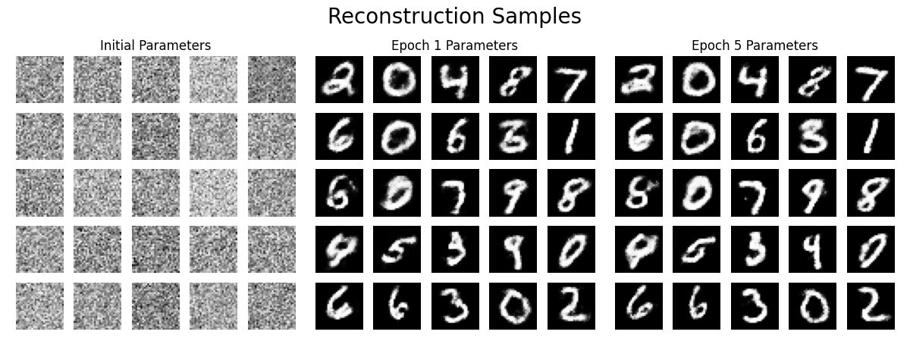
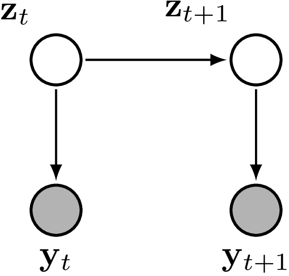
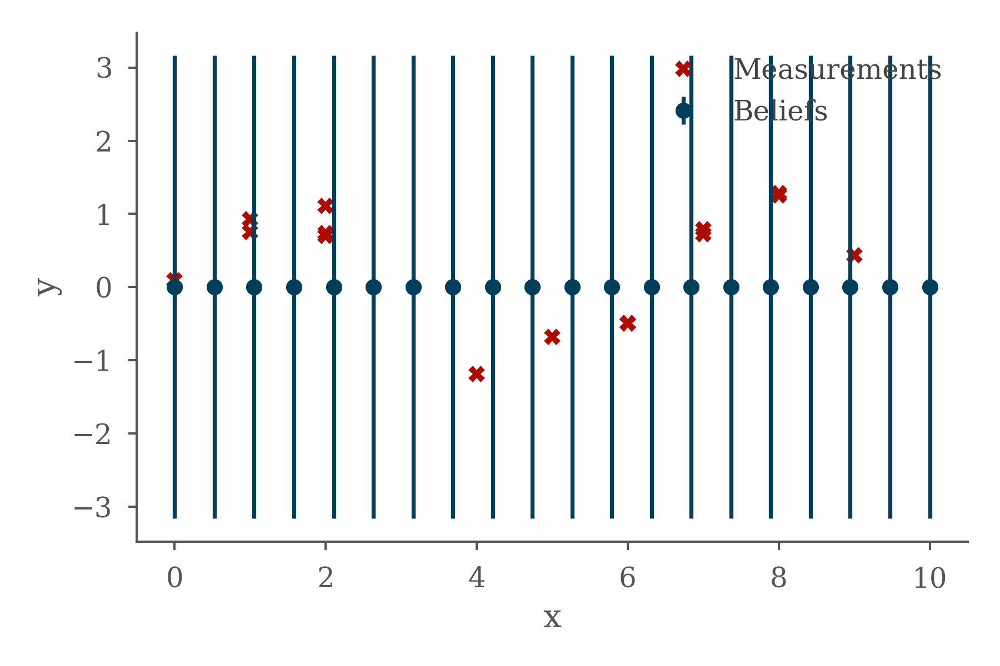

Google Summer of Code (GSOC) is an annual program which aims to get people involved in open-source software development. Every year it matches new contributors with hundreds of different open-source organisations. Under the guidance of a mentor, contributors spend ~12 weeks over the summer working on an open-source project as part of their chosen organisation.
In the spring of 2022 I was nearing the end of the write-up of my PhD and GSOC felt like a great fit for the coming summer. Not only would it be a good opportunity to improve my technical skills and get some experience working collaboratively on a code-base, but I was also aware of how much I had benefited from the work of the open-source community during my PhD and was excited at the opportunity being able to contribute something back.
I was lucky enough to be selected to work as part of the Google TensorFlow organisation and was mentored by Kevin Murphy and Scott Linderman. My work over the summer consisted of:
- Contributing to Kevin’s textbook Probabilistic Machine Learning: Advanced Topics.
- Implementing Gaussian belief propagation in JAX.
- Assisting in the development of dynamax - a library for efficient inference and learning for state-space models.
I had a great time working on these projects and learnt a huge amount while doing so. This post details some of my experiences during the summer and serves as a record of the work that I undertook for GSOC admin purposes.
The Book
During the first part of the summer my time was predominantly spent helping with the final stages of the development of the (excellent1) textbook Probabilistic Machine Learning: Advanced Topics (Murphy, 2023), the follow-up to the (also excellent) Probabilistic Machine Learning: An Introduction (Murphy, 2021).

A brilliant thing about these books is that a frankly ridiculous2 number of the figures have associated colab notebooks which demonstrate the code used to generate them. This is a fantastic resource for anyone looking to implement the methods described in the book and is the product of a huge amount of work by a large number of contributors. I would highly recommend checking them out.3
My first contribution to the book was actually made during the GSOC selection process. As part of my application to work on this project I wrote a notebook demonstrating training a Restricted Boltzmann Machine using Contrastive Divergence in JAX. Some figures from this notebook, one of which is reproduced below, are included in the book.

After the start of the GSOC process my contributions to the book focussed more on the topic of state-space models. To provide some context for the rest of this post it will be helpful to quickly cover some background.
State-Space Models
A state-space model is characterised by a hidden state, \(\mathbf{z}_t\), which evolves over time according to a Markov process. At each time step4 observations, \(\mathbf{y}_t\), are generated conditional on the current value of the hidden state. This process can be represented graphically as follows:

State-space models are interesting because they can be used to model a wide variety of phenomena and, importantly, there exist powerful algorithms for performing inference. These algorithms take advantage of the Markovian structure of the model to efficiently calculate the posterior distribution over the hidden state given a sequence of observations.5
The state-space formulation is very general and encompasses many well-known model families. For instance, if we restrict the hidden state to taking only discrete values, \(z_t \in \{1, \dots, K\}\), we get a Hidden Markov Model. The family of models that I focussed over the summer was linear Gaussian state-space models.6 In these models the hidden state is continuous, \(\mathbf{z}_t \in \mathbb{R}^D\), and the transition and observation functions are linear transformations, \[ \begin{align} \mathbf{z}_{t} &= \mathbf{F}_t \mathbf{z}_{t-1} + \mathbf{b}_t + \mathbf{q}_t,\\ \mathbf{y}_t &= \mathbf{H}_t \mathbf{z}_t + \mathbf{d}_t + \mathbf{r}_t \end{align} \] where \(\mathbf{q}_t\), \(\mathbf{r}_t\), are Gaussian noise vectors, \[ \begin{align} \mathbf{q}_t &\sim \mathcal{N}(\mathbf{0}, \mathbf{Q}_t),\\ \mathbf{r}_t &\sim \mathcal{N}(\mathbf{0}, \mathbf{R}_t). \end{align} \] Gaussians are robust and amiable7 distributions, if we start with a Gaussian prior on the first hidden state, all the subsequent conditional distributions will also be Gaussian8 \[ \begin{align} p(\mathbf{z}_0) &= \mathcal{N}(\mathbf{z}_0 \,|\, \boldsymbol{\mu}_0, \boldsymbol{\Sigma}_0),\\ p(\mathbf{z}_t \,|\, \mathbf{z}_{t-1}) &= \mathcal{N}(\mathbf{z}_t \,|\, \mathbf{F}_t \mathbf{z}_{t-1} + \mathbf{b}_t, \mathbf{Q}_t),\\ p(\mathbf{y}_t \,|\, \mathbf{z}_t) &= \mathcal{N}(\mathbf{y}_t \,|\, \mathbf{H}_t \mathbf{z}_t + \mathbf{d}_t, \mathbf{R}_t). \end{align} \]
Inference in state-space models is often divided into two types of problems, known as filtering and smoothing, which differ on the time points which are used to infer the hidden state. Filtering calculates the posterior distribution of the hidden state at some time, \(t\), conditioned on all the observations up to and including this time point, \(p(\mathbf{z}_t | \mathbf{y}_{1:t})\). In linear Gaussian state-space models, the algorithm for filtering is the famous Kalman filter. In contrast, smoothing uses information from subsequent observations, up to some future time-point \(T>t\), to inform the estimate of the hidden state, \(p(\mathbf{z}_t | \mathbf{y}_{1:T})\).
Alongside helping out with code examples for the figures I was able to contribute to the book itself with a modest sub-(sub-sub-)section containing some derivations for information-form filtering and smoothing in linear Gaussian state-space models.
The information, or canonical, form of a multivariate Gaussian is an alternative parameterisation to the standard moment form in which the mean vector, \(\boldsymbol{\mu}\), and covariance matrix, \(\boldsymbol{\Sigma}\), are replaced with the precision-weighted mean9, \(\boldsymbol{\eta}\), and the precision matrix, \(\boldsymbol{\Lambda}\). The relationship between these parameterisations is: \[ \begin{align} \boldsymbol{\eta} &= \boldsymbol{\Lambda}\boldsymbol{\mu},\\ \boldsymbol{\Lambda} &= \boldsymbol{\Sigma}^{-1}. \end{align} \]
The information-form parameters are the natural parameters of the Gaussian, and, while their values can be a bit more difficult to directly interpret than the mean and covariance, working in this form makes certain calculations considerably more straight-forward.10
It was a real pleasure to be involved in the book project and it provided a some great learning opportunities. Getting lots of practice manipulating multivariate Gaussians was a valuable exercise and comes with a certain sort of ascetic satisfaction.11 Learning more about the relationship between the two parameterisations, and the natural parameters of exponential family distributions more generally, was satisfying in a slightly more indulgent sense and is something which I might even write a post about in the future.
Implementing Gaussian Belief Propagation in Jax
One of the principal code projects I worked on during the summer was to develop an implementation of Gaussian belief propagation in JAX.

The project fit well with the topics I was working on in the book, presented some interesting implementation challenges, and taught me some valuable lessons. In order to explain why, it will be helpful to quickly cover some background.
Gaussian Belief Propagation
Gaussian belief propagation is an example of a message passing algorithm.12 At a high level, message passing algorithms solve big, hard, problems by breaking them up into many smaller, easier, problems. Solutions to these sub-problems are found and the results are combined (by passing messages) to reconstitute a solution to the original problem.
Problems in statistics often boil down to performing calculations on probability distributions. For instance, given a probabilistic model of a process, you might want to calculate the marginal distribution of some quantity of interest conditioned on data. In difficult problems these calculations often involve large or otherwise unwieldy distributions. The way in which calculations involving probability distributions can be broken up into smaller problems is determined by the conditional independence structure of the distributions.
Graphical models represent the conditional independence structure of a probability distribution as a graph. Message passing algorithms then consist of performing calculations for each node (or clique) in this graph and passing messages between nodes to combine the results.
A particularly important message-passing algorithm is the sum-product algorithm. The sum-product algorithm calculates the marginal distributions of unobserved variables conditioned on values of the observed variables. The distributions calculated for each node are sometimes called belief states and so this message passing algorithm is also known as belief propagation. Message passing is a broad framework and many well-known algorithms can be expressed as message passing algorithms. This includes the Kalman filter for inference in linear Gaussian state-space models, mentioned above, which can be formulated as an example of a belief propagation algorithm.
In Gaussian distributions, the conditional independence structure is determined by the sparsity pattern of the precision matrix, \(\boldsymbol{\Lambda}\). This means that it can be quite natural to work with the information form parameters as part of Gaussian belief propagation. These connections between some of the subjects I focussed on for the book (i.e. information form filtering and smoothing) and Gaussian belief propagation, meant that it was a natural pairing of topics for me to work on over the summer.
For certain graph structures13 there exist message passing algorithms to calculate exact solutions. These exact algorithms carefully control the flow of messages in the graph to ensure that evidence is appropriately propagated between nodes. In other scenarios, perhaps because it is not possible given the graph structure14, or simply because the message passing schedule does not enforce it, evidence is allowed to circulate in a more haphazard fashion, messages travel in loops, and evidence may be double counted. In such cases, message passing provides an approximate solution and these algorithms are known as loopy belief propagation. The basic idea is to run belief propagation with loops, cross your fingers and hope that it will converge to a decent estimate. It often does.15
The figure at the top of this section shows the progress of a loopy belief propagation algorithm for a simple 1D inference problem in which the value of an unknown function is inferred from measurements and a smoothness constraint. The code used in this example can be found here.
Coming from a biological background, there is something reassuringly messy about loopy belief propagation as a distributed approach to solving a problem. None of this fancy scheduling business, just let the messages fly and see what happens.
When things in biology perform these types of distributed operations there is often no possibility of a central supervisor, all coordination between the different entities, different cells for instance, must be encoded in the interactions between them.
Furthermore, the idea of tackling a big distributed problem by solving a bunch of more straightforward local problems and communicating the results is reminiscent of some of the biological phenomena I studied during my PhD.
JAX Implementation
JAX is a Python library for machine learning and scientific computing which combines autograd and XLA. You get automatic calculation of gradients (of any order), jit compilation, auto-vectorisation as well as native support for different hardware accelerators (GPUs and TPUs) all while writing code with a familiar numpy-style interface. There is an increasingly rich ecosystem of libraries for all sorts of specialised tasks.16
By implementing Gaussian belief propagation in JAX we can take advantages of all of the helpful features described above and also open up the possibility of using it as a subroutine in other JAX code.
This was a rather different style of development to what I was used to from my PhD. Writing code that is intended to exist as a stand-alone implementation for others to use feels rather different to writing code that is only meant to be used as part of a particular analysis. The project also presented a variety of design challenges. These ranged from interesting problems such as how to reconcile the object-oriented nature of message passing17 with the functional programming style of JAX to more mundane issues such as figuring out the most efficient way to extract particular blocks from a precision matrix.18
I learned a lot during the process about managing this type of development project but learning these lessons took time and ultimately I think it is fair to say that the final product fell a bit short of the initial (rather ambitious) goals. Having said this, I think there are a bunch of positives to have come out of this part of the project. I got great exposure to some of the more internal bits of JAX and fell in love with pytrees.
As it stands at the end of the summer, the implementation contains loopy belief propagation for general graphs and directed belief propagation on chain structured graphs and will serve as a great foundation for future development which I am keen to continue.19
dynamax

In addition to the project on Gaussian belief propagation I also worked on the development of dynamax - a library for efficient inference and learning in state-space models built to leverage JAX. This work was done alongside a fantastic team and collaborating with them was a real highlight of the summer.
My principle personal contributions to dynamax mirrored some of my contributions to the book and involved developing demos and implementing information-form filtering and smoothing. I was also able to get involved more generally with the development of the library and contributed to discussions about the overall structure of the code-base and the design of the API. It was really a valuable opportunity to gain experience working with a larger code-base and to learn more about the practicalities of software development, code-review, and automated testing.
I look forward to continue working as a maintainer on dynamax and am excited to see how it develops.
Update (Dec 2022) dynamax has now been ‘released’ and it’s going well!
Reflecting on the Experience
Overall I am really pleased with my GSOC experience. I learned an enormous amount and feel very fortunate to have been able to be involved in such varied and interesting projects.
First and foremost however, I am hugely grateful to my fellow contributors for helping to create such a great working environment and to my mentors, Kevin and Scott, for their patience, guidance, and support throughout the summer.
dynamax PRs
For GSOC administrative purposes, below is a collection of Pull Requests I made to the dynamax repo20 during the GSOC period:
Footnotes
I’m biased, but honestly it is very good.↩︎
we’ll restrict ourselves to discrete time systems here↩︎
The lingo in the field refers to this process as inference. The term learning is used to refer to the process of using data to estimate model parameters values. I initially found this a bit confusing because, if you are Bayesian enough, everything is inference. It does however reflect the fact that, in practice, most of the time learning is a matter of calculating point estimates rather than posterior distributions.↩︎
Also known as a Linear Dynamical Systems↩︎
like Hagrid↩︎
In other words, the family of Gaussian distributions is closed under affine transformations.↩︎
also known as the potential or information vector↩︎
Given the parameters of the joint distribution in moment form, it is easy to calculate the parameters of the marginal distributions, they can simply be extracted from the mean vector and covariance matrix. This is part of the reason it is easy to directly interpret the significance of parameter values in this form. Conversely, it is difficult to calculate the parameters of a conditional distribution in moment form (difficult in the sense that it involves a matrix inverse). This is the other way round for information form, where it is difficult to calculate the parameters of a marginal distribution but it is straightforward to calculate the parameters of a conditional distribution.↩︎
Eat your vegetables and do linear algebra kids.↩︎
We will stick to very high level details here, for a more in-depth introduction to Gaussian Belief Propagation, with great interactive visualisations, see gaussianbp.github.io.↩︎
trees↩︎
it is possible to convert any graph to have the appropriate structure, using the junction-tree algorithm, however that is outside the scope of both my project and the current discussion↩︎
Data not shown.↩︎
It turns out that there is a deep link between object-oriented programming and message passing (understood in the broad sense of the term). Adam Kay, who coined the term “object-oriented”, later regretted this choice because he felt the “big idea” was actually the messages passed between the objects.
In The Early History Of Smalltalk, Kay presents the history of some of these ideas. It is a considerably more engaging read than 20,000 words on the history of a programming language has any right to be and takes an endearingly philosophical perspective in many places. I heartily recommend giving it a look even if the topic doesn’t sound particularly interesting to you at first glance (it certainly didn’t to me).↩︎
Which in retrospect was a clear instance of premature optimisation.↩︎
inshallah↩︎
formerly known as
ssm-jax↩︎